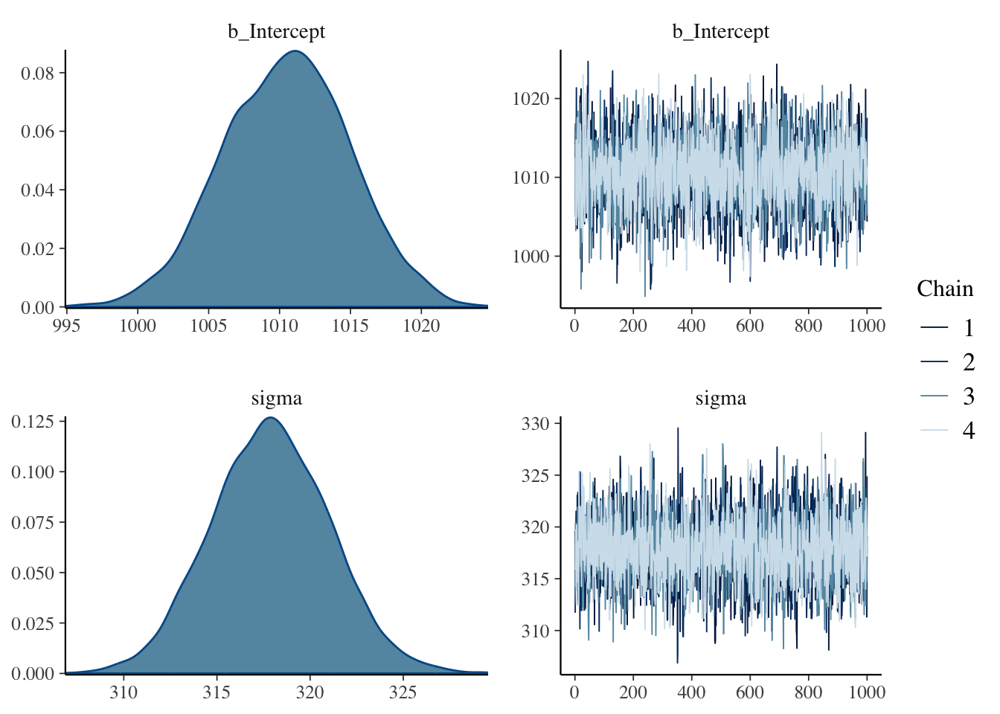

You can fit a Gaussian model to data using the brms package (the name is an initialism of Bayesian Regression Models using Stan; Gaussian models are a special type of regression models, which will be introduced in Chapter 21).
The brms package can run a variety of Bayesian (regression) models. It is a very flexible package that allows you to model a lot of different types of variables. You don’t really need to understand all of the technical details to be able to effectively use the package and interpret the results, so this textbook will focus on how to use the package in the context of research. We will cover some of the technicalities, but if you are are particularly interested in the inner workings of the package, feel free to do so (you can find materials on specific aspects by searching online). One useful thing to know is that brms is a bridge between R and the statistical programming software Stan. Stan is a powerful piece of software that can run any type of Bayesian models. What brms does is that it allows you to write Bayesian models in R, which are translated into Stan models and run with Stan under the hood. You can safely use brms without learning Stan, but if you are interested in the computational aspects of Stan, you can check the Stan documentation.
The first thing to do is of course to attach the brms package (see code below). You can then run a regression model with the brm() function, short for Bayesian Regression Model (a Gaussian model is a special type of regression model). The mandatory arguments of brm() are a model formula, a distribution family (of the outcome variable), and the data you want to run the model with. Running a model with data is also formally known as fitting the model to the data. Remember the model mathematical formula from above: \(\text{RT} \sim Gaussian(\mu, \sigma)\). It would be nice if brms() allowed you to write the formula like that.
# This would be nice, but it won't work!brm( RT ~Gaussian(mu, sigma),data = mald)
Alas, due to historical and technical reasons of how other R packages write model formulae, you need to use a special way of specifying the model. As mentioned, you need three arguments: a model formula, the distribution family of the outcome, and the data. So the mathematical formula is split in two parts (corresponding to two arguments of the brm() function): formula and family.
RT ~ 1 and family = gaussian simply tell brms to model RT using a Gaussian distribution. This means that the probability distribution of the mean and the standard deviation of the Gaussian distribution of RTs will be estimated from the data. RT ~ 1 might look very weird to you right now, but it will become clear in the next couple of chapters why it is that way. For now, just accept that that is the way you write a Gaussian model in R.
We specify the data with data = height.
As with other R functions, we want to save the output of brm() to a variable, here rt_bm. We will then be able to inspect the output in rt_bm. Now run the Gaussian model of RTs (don’t forget to attach the brms package, like in the following code).
When you run the code, text will be printed in the R Console or below the code if you are using a Quarto document (you should!). This is what it looks like.
Compiling Stan program...Start samplingSAMPLING FOR MODEL 'anon_model'NOW (CHAIN 1).Chain 1:Chain 1: Gradient evaluation took 0.000156 secondsChain 1:1000 transitions using 10 leapfrog steps per transition would take 1.56 seconds.Chain 1: Adjust your expectations accordingly!Chain 1:Chain 1:Chain 1: Iteration:1/2000 [ 0%] (Warmup)Chain 1: Iteration:200/2000 [ 10%] (Warmup)Chain 1: Iteration:400/2000 [ 20%] (Warmup)<more text omitted>
The messages in the text are related to Stan and the statistical algorithm used by Stan to estimate the parameters of the model (in this model, these are the mean and the standard deviation of height). Compiling Stan program... tells you that brms has instructed Stan to compile the model specified in R and that Stan is now compiling the model to be run on the data (don’t worry if this does not make sense). Start sampling tells us that the statistical algorithm used for estimation has started. This algorithm is the Markov Chain Monte Carlo algorithm, or MCMC for short. The algorithm is run by default four times; in technical terms, four MCMC chains are run. Hence why you will see information on Chain 1, 2, 3, and 4. If you want to learn more about the MCMC algorithm, check Finding posteriors through sampling by Elizabeth Pankratz and the resources linked there.
Now that the model has finished running and that the output has been saved in rt_bm, we can inspect it with the summary() function (note that this is difference from summarise()!).
summary(rt_bm)
Family: gaussian
Links: mu = identity; sigma = identity
Formula: RT ~ 1
Data: mald (Number of observations: 5000)
Draws: 4 chains, each with iter = 2000; warmup = 1000; thin = 1;
total post-warmup draws = 4000
Regression Coefficients:
Estimate Est.Error l-95% CI u-95% CI Rhat Bulk_ESS Tail_ESS
Intercept 1010.50 4.45 1001.66 1019.26 1.00 3628 2476
Further Distributional Parameters:
Estimate Est.Error l-95% CI u-95% CI Rhat Bulk_ESS Tail_ESS
sigma 317.88 3.17 311.74 324.17 1.00 4064 2571
Draws were sampled using sampling(NUTS). For each parameter, Bulk_ESS
and Tail_ESS are effective sample size measures, and Rhat is the potential
scale reduction factor on split chains (at convergence, Rhat = 1).
Let’s break down the summary bit by bit:
The first few lines are a reminder of the model we fitted:
Family is the chosen distribution for the outcome variable (here RT), here a Gaussian distribution.
Links lists the link functions. You don’t need to worry about these now.
Formula is the model formula.
Data reports the name of the data and the number of observations.
Finally, Draws has information about the MCMC draws.
Then, the Regression Coefficients are listed as a table. They are called this way because brms fits Bayesian regression models and a Gaussian model is a special type of regression model (you will learn about regression models in the following chapters). In the Gaussian model we fitted now, we only have one regression coefficient, Intercept, which corresponds to \(\mu\) from the formula above (for the reason why it is called that way, you will have to wait until regression models are introduced in the following chapter, sorry for the many promissory explanation). You will learn how to interpret the Regression Coefficients table below.
Then Further distributional parameters are tabled. Here we only have sigma which is \(\sigma\) from the formula above. The table has the same columns as the Regression Coefficients table.
20.1 Posterior probability distributions
The main characteristic of Bayesian models is that they don’t just provide you with a single numeric estimate for the model parameters. Rather, the model estimates a full probability distribution for each parameter/coefficient. These probability distributions are called posterior probability distributions (or posteriors for short). They are called posterior because they are derived from the data and the prior probability distributions (you will learn about priors in XXX). The model we fitted has two parameters: the mean \(\mu\) and the standard deviation \(\sigma\). For reasons that will become clear in Chapter 21, the \(\mu\) parameter is called Intercept in the summary: you can find it in the Regression Coefficients table. The standard deviation \(\sigma\) is in the Further distributional parameters table.
The Regression Coefficients table reports for each estimated coefficient a few summary measures of the posterior distributions of the estimated coefficients. Here, we only have the summary measures of one posterior: the posterior of the model’s mean \(\mu\). The table also has three diagnostic measures, which you can ignore for now.
Here’s a break down of the table’s columns:
Estimate, the mean estimate of the coefficient (i.e. the mean of the posterior distribution of the coefficient). In our model, this is the mean of the posterior distribution of the mean \(\mu\) (Intercept). Yes, you read right: the mean of the mean! Remember, Bayesian models estimate a full probability distribution and this can be summarised with a mean and a standard deviation. In this model, the posterior mean (short for mean of the posterior probability distribution) of \(\mu\) is 1010.5 ms.
Est.error, the error of the mean estimate, or estimate error. The estimate error is the standard deviation of the posterior distribution of the coefficient (here the mean \(\mu\)). Yes, the standard deviation of the mean! Again, since we are estimating a full probability distribution for \(\mu\), we can summarise it with a mean and SD as we do for any Gaussian distribution. In this model, the posterior SD of \(\mu\) is 4.45 ms.
l-95% CI and u-95% CI, the lower and upper limits of the 95% Bayesian Credible Interval (more on these below).
Finally, Rhat, Bulk_ESS, Tail_ESS are diagnostics of the MCMC chains. We will treat model diagnostics in XXX.
The Further distributional parameters table has the same structure. In this model, the posterior mean of \(\sigma\) is 317.88 ms and the posterior SD of \(\sigma\) is 3.17 ms.
Putting all this together in mathematical notation:
In other words, according to the model and data, the mean or RTs is a value from the distribution \(Gaussian(1010.5, 4.45)\) and the SD of RTs is a value from the distribution \(Gaussian(317.88, 3.17)\). The model has quantified the uncertainty around the value of the \(\mu\) and \(\sigma\) parameters and this uncertainty is reflected by the fact that we get a full posterior probability distribution (summarised by its mean and SD) for each of the parameters. We don’t know exactly the values of the parameters of the Gaussian distribution assumed to have generated the sampled RTs.
Spotlight: Student-t
20.2 Plotting the posterior distributions
While the model summary reports summaries of the posterior distributions, it is always helpful to plot the posteriors. We can easily do so with the base R plot() function, like in Figure 20.1. The density plots of the posteriors distributions of the two parameters estimated in the model are shown on the left of the figure: b_Intercept which corresponds to Intercept from the summary and sigma (the reason for why it’s b_Intercept will become clear in Chapter 21).
plot(rt_bm, combo =c("dens", "trace"))

Figure 20.1: Posterior plots of the rt_bm Gaussian model
For the b_Intercept coefficient, i.e. the mean \(\mu\), the posterior probability encompasses values between 1000 and 1020 ms, approximately. But some values are more probable then others: the values in the centre of the distribution have a higher probability density then the values on the sides. The mean of that posterior probability distribution is the Estimate value in the model summary: 1010.5 ms. Its standard deviation is the Est.error: 4.45 ms. The mean indicates the value with the highest probability density, which corresponds to the value on the horizontal axis of the density plot below the highest peak of the density curve. Based on these properties, values around 1010.5 ms are more probable than values further away from it.
For sigma, i.e. \(\sigma\), the posterior probability covers values between 310 and 325. What is the mean of the posterior probability of \(\sigma\)? The answer is in the summary, in Further distributional parameters. There you will also find the standard deviation of the posterior of \(\sigma\). That’s a standard deviation of a standard deviation! As before, this is because we are not estimating a simple value for \(\sigma\) but a full (posterior) probability distribution and we can summarise this distribution with a mean and a standard deviation. Again, the highest peak in the distribution corresponds to the Estimate value.
Now, looking at a full probability distribution like that is not very straightforward and summary measures can be even less straightforward. Credible Intervals (CrIs) help summarise the posterior distributions so that interpretation is more straightforward.
20.3 Interpreting Credible Intervals
The model summary reports the Bayesian Credible Intervals (CrIs) of the posterior distributions. Another way of obtaining summaries of the coefficients is to use the posterior_summary() function which returns a table (technically, a matrix, another type of R objects; we print only the first two rows with [1:2,] because we can ignore the other ones).
The 95% CrI of the b_Intercept is between 1002 and 1019. This means that there is a 95% probability, or (equivalently) that we can be 95% confident, that the Intercept, i.e. \(\mu\), is within that range. For sigma, i.e. \(\sigma\), the 95% CrI is between 311.7 and 324.2. So, again, there is a 95% probability that the sigma value is between those values. So, to summarise, a 95% CrI tells us that we can be 95% confident, or in other words that there is a 95% probability, that the value of the coefficient is between the values of the CrI.
There is nothing special about 95% CrI and in fact it is recommended to calculate and report a few. Personally, I use 90, 80, 70 and 60% CrIs. You can get any CrI with the summary() and the posterior_summary() functions, but you will also learn an alternative way in Chapter 22. Here is how to get an 80% CrI with summary().
summary(rt_bm, prob =0.8)
Family: gaussian
Links: mu = identity; sigma = identity
Formula: RT ~ 1
Data: mald (Number of observations: 5000)
Draws: 4 chains, each with iter = 2000; warmup = 1000; thin = 1;
total post-warmup draws = 4000
Regression Coefficients:
Estimate Est.Error l-80% CI u-80% CI Rhat Bulk_ESS Tail_ESS
Intercept 1010.50 4.45 1004.74 1016.14 1.00 3628 2476
Further Distributional Parameters:
Estimate Est.Error l-80% CI u-80% CI Rhat Bulk_ESS Tail_ESS
sigma 317.88 3.17 313.84 321.89 1.00 4064 2571
Draws were sampled using sampling(NUTS). For each parameter, Bulk_ESS
and Tail_ESS are effective sample size measures, and Rhat is the potential
scale reduction factor on split chains (at convergence, Rhat = 1).
For posterior_summary(), you specify the quantiles rather than the probability level.
Here you have the results from the regression model. Really, the results of the model are the full posterior probabilities, but it makes things easier to focus on the CrI.
20.4 Reporting
What about reporting the model in writing? We could report the model and the results like this (for simplicity, we report only the 95% CrIs here. You will learn how to report multiple CrIs in tables in XXX).1
We fitted a Bayesian Gaussian model of reaction times (RTs) using the brms package (Bürkner 2017) in R (R Core Team 2024). The model estimates the mean and standard deviation of RTs.
Based on the model results, there is a 95% probability that the mean is between 1002 and 1019 ms (mean = 1011, SD = 4) and that the standard deviation is between 312 and 324 ms (mean = 318, SD = 3).
To know how to add a citation for any R package, simply run citation("package") in the R Console, where "package" is the package name between double quotes.↩︎